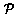
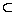
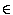
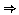

|
|
The Object Centered Language Manual
|
|
The components in OCLh are to a certain extent independent, their order is not important, but a complete set of the components is required. If any component is not available in a specified planning world, an empty entry is needed to define it.
Comments can be included anywhere in OCLh. They are introduced by "%". Everything following it in the line is treated as comment and ignored by the OCLh compiling and planning tools. Presently, the concrete syntax of OCLh is interpretable as a set of Prolog terms.
basic classes: object id, sort id, predicate, variable,
operator id, method id, method body,
substate ::= list of ground dynamic predicates
substate expression ::= list of predicates
object term ::= object id OR variable
object description ::= ss(sort id, object id, substate)
object expression ::= se(sort id, object term, substate expression)
class expression ::= ce(sort id, object term, substate expression)
object transition ::= sc(sort id, object term, substate expression => substate expression)
sort definition ::= sorts(sort id, list of sort ids).
object definition ::= objects(sort id, list of object ids).
predicate definitions ::= predicates(list of typed predicates).
non-atomic invariant ::= inconsistent OR implied
inconsistent ::= inconsistent_constraint(list of predicates).
implied ::= implied_invariant(list of predicates,list of predicates).
atomic invariants ::= atomic_invariants(list of static predicates).
substate class definition ::= substate_classes(sort id,object id,list of substate expressions)
hierarchical method ::= method(method id,
list of object expressions,
list of necessary object transitions,
list of static predicates,
list of temporal predicates,
method body).
primitive operator ::= operator(operator id,
list of object expressions,
list of necessary object transitions,
list of conditional object transitions).
OCL MODEL ::= list of sort definitions
list of object definitions
predicate definitions
[list of non-atomic invariants]
atomic invariants
list of substate class definitions
list of hierarchical methods
list of primitive operators
A sort (or object class) is a set of object identifiers representing objects that share a common set of characteristics and behaviours. An object description (or simply object) is an object identifier together with a description of the identifier's current "local state" - called its substate . A substate is written in terms of properties and relations between its identifier and other object identifiers.
Sorts may be hierarchical, with primitive sorts at the lowest level.
Dynamic (static): A sort is dynamic (static) if its objects are defined as being dynamic (static). objects are dynamic if their substates are affected as a result of actions, otherwise they are static.
A predicate represents a property of an object or a relation between objects. The set of all syntactically correct predicate structures in a domain model is referred to as .
Invariants include atomic invariants, inconsistent constraints (Negative invariants) and implied constraints. They help to further define and restrict the domain model.
Each object identifier belongs to a single primitive object class called a sort. For example:
objects(block, [b1, b2, b3]). objects(gripper, [g]).Additionally, objects are members of sorts further up the ``sort hierarchy''. A sort hierarchy can be stated in OCLh as in the following examples:
sorts(physical_object, [block,gripper]).The name of the sort is followed by a list of its object identifiers.
Each dynamic object's substate is defined by the use of one or more of a well defined set of predicate names with well defined arguments.
In the above example:
The set of predicate names for block could be "on_block",
"on_table", "clear" and "gripped". The set of predicate
names for gripper could be "free" and "busy".
These sets of predicates for each sort need not be mutually exclusive as will be shown later in the section on hierarchical models. Also, these predicates are all classed as dynamic because their truth value may change as a result of plan execution.
Predicate arguments are "typed" by sort names:
on_block(block,block), on_table(block), clear(block), ...
An object description is an
object identifier i of sort s written
together with a substate comprising of ground predicates. Examples in
the block's world could be:
ss(block,b1, [on_table(b1),clear(b1)]) ss(block,b2, [on_block(b1,b2),clear(b1)])
An important part of OCLh is to specify
all the "legal" substates that an
object may occupy. For example, one can define the following as all seven
legal substates for block "b1" in the above blocks world:
[on_table(b1),clear(b1)], [on_block(b1,b2),clear(b1)], [on_block(b1,b3),clear(b1)], [on_block(b1,b2)], [on_block(b1,b3)], [on_table(b1)], [gripped(b1,g)](Note that there are always alternative formulations!)
In the same way, the following may be the substates for the gripper:
[free(g)], [busy(g)]The set of substates that an object identifier
i can occupy are referred
to as substates(i). In an OCLh
specification the designer constructs a set of substate class definitions
which define substates(i) precisely but
in a more compact fashion than enumeration.
For example (to distinguish object names
from object parameters, we use the convention that
parameters start with one or more upper-case letters):
substate_classes(block, B,
[on_table(B),clear(B)],
[on_block(B,B1),clear(B),ne(B1,B)],
[on_block(B,B1), ne(B1,B)],
[gripped(B,G)])
[on_table(B)])
Every instance of one of the lists of dynamic predicates
in the 3rd component of substate_class that obeys
the predicate type definitions, and that instantiates any static predicates
occurring to be true,
should be a member of substates(i),
and vice-versa. There are a collection of ``built-in'' static predicates which are defined in all
OCLh tools, they are ne(i,j), is_of_primitive_sort(i,S)
and is_of_sort(i,S).
ne(i,j) means i cannot be equal to j.is_of_primitive_sort(i,S) means object i is of primitive
sort S.is_of_sort(i,S) means object i is of sort S.For simplicity, it is sometimes assumed that all true instances of these predicates are members of the atomic invariants.
A dynamic predicate P describes an object i if P
is used to define substates of i - i.e. P appears in the substate
class definition.
Often, i is positioned in the first argument of P to make
this association obvious.
Another important part of OCLh is that of an object expression. Goals and operator preconditions are written as sets of object expressions. An object expression is a generalisation of a object description, and is specified using dynamic and possibly static predicates.
Extra notation needs to be introduced to define object expressions.
s
by an object term which has s as either its primitive sort or
its supersort.consistent if there
is a legal substitution that
instantiates them to facts asserted as true in the atomic invariants.p
then let dynamic(p) and static(p) be
the dynamic and static predicates in p, respectively.If g ,
then se(s,i,g) is called an object expression if
there is an h 
substates(j)
for some object identifier j of primitive sort s',
and a legal substitution t
such that
it = j dynamic(g)t
hs'= s or s' is a subsort of sstatic(g)t is consistent In this case object ss(j,s',h) is said to satisfy se(i,s,g).
Since i could be a dynamic object identifier or variable, we
refer to it as an object term.
For example, the object description
ss(block,b1, [on_table(b1),clear(b1)])
satisfies se(block,B, [clear(B)]) with substitution
[B/b1].
A world state is a mapping from dynamic object identifiers to substates - this associates each object with a unique substate in its class. It is written as a list of object descriptions as shown in the following example.
[ss(gripper,g, [free(g)]), ss(block, b1, [clear(b1), on_block(b1,b2)]), ss(block, b2, [on_table(b2)]), ss(block, b3, [clear(b3),on_table(b3)])]
A class expression ce(s,i,g) is defined
in much the same way as an object expression except that when ground
g must equate to an exact object's substate.
Class expressions are important because one needs to specify
deterministically how classes of objects change using a
parameterised notation. Hence the output of a parameterised
operator (defined below) will be in terms of class expressions,
which when instantiated will specify a
an object description uniquely (later, when we introduce
hierarchy, a class expression when instantiated will specify
one or more hierarchical components of an object description uniquely).
In a sense, an object description is a class expression that
is fully ground.
Hence class expressions may satisfy object expressions
under the same conditions that an object description satisfies an
object expression.
If se(s,i,g) and ce(s,i,h) are an object
expression and a class expression respectively, then g
h
is called an object transition (this is sometime written adorned with
sort and object identifiers as (s,i,gh).
A transition of i is applicable to a
class expression ce(s',i', h') if under a legal substitution
t, h' satisfies g.
The transition changes ce(s',i',h') to
ce(s',i',ht).
An action in a domain is represented by either a primitive or
method operator. Primitive operators specify under what
conditions objects may go through single transitions; compound
operators specify under what conditions
objects go through whole transition sequences.
A primitive operator schema O has
components
operator(Nm,Prev,Index,Cond,Cons),
such that Nm is the
operator's name followed by its
parameters, Prev is the prevail condition
consisting of a set of object expressions,
Index is a set of necessary object
and transitions, Cond is a set of conditional transitions.
If any object referred to in the operator changes its substate then
the new substate must be unique (i.e. the operator is `deterministic').
Let statics(O) be the set of static predicates
occurring anywhere in operatorO.
Then primitive operator O can be applied to a world state
S if there is a grounding substitution t for
Index and Prev such that each
transition in Indext can be applied to an
object description
in S, and each object expression in
Prevt is satisfied in S.
Further, statics(O)t must be consistent.
The new world state is S with
LHS of a
transition in Condt, changed according
to that transition. |